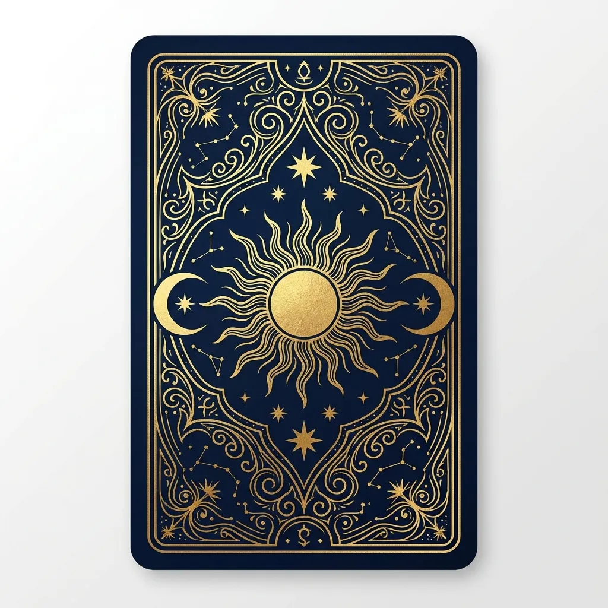

Například: co dnes nemám přehlédnout, kde mám zpomalit nebo jaký krok dává smysl?
Karta dne zdarma
Tarot karta dne pro dnešní směr
Vytáhněte si jednu kartu a získejte krátký symbol pro energii dne, rozhodnutí před vámi a první praktický krok.
Bez registrace
Česky a okamžitě
Navazuje na hlubší tarot



Dnešní karta
Otočte si kartu dne přímo tady
Dnešní karta je stejná pro celý den, aby se k ní dalo vracet. Berte ji jako krátký symbol pro to, co dnes nepřehlédnout.
Karta čeká na otočení
Tvoje dnešní karta
Otoč kartu a uvidíš symbol dne, krátký význam a navazující krok.
Jak s ní pracovat
Jedna karta, jeden konkrétní směr
Denní tarot má být rychlý. Neřeší celý život najednou, ale ukáže téma, které dnes stojí za pozornost.
Kartu neberte jako rozsudek. Berte ji jako symbol, který pomáhá pojmenovat intuici.
Když karta otevře větší téma, pokračujte tříkartovým výkladem nebo otázkou pro Hvězdného průvodce.
Výklad v praxi
Co ti dnešní tarotová karta řekne
Karta dne nemá rozhodovat za tebe. Má dát jméno tomu, co už cítíš, a převést nejasný pocit do jedné konkrétní otázky nebo kroku.
Velká arkána ukáže téma
Když přijde karta jako Hvězda, Síla nebo Věž, obvykle mluví o větším posunu, odvaze, zlomu nebo návratu důvěry.
Projít významy karetMalá arkána zpřesní krok
Hůlky často řeší akci, poháry vztahy, meče myšlenky a pentákly praktické věci. Díky tomu víš, kde začít.
Vybrat typ tarotuJedna karta je začátek
Pokud dnešní symbol trefí silné téma, rozviň ho tříkartovým výkladem a podívej se na souvislosti kolem rozhodnutí.
Rozvinout výklad
Další krok
Když jedna karta nestačí
Vyberte cestu podle toho, co po kartě dne řešíte dál.
Chci souvislosti
Tříkartový tarot
Minulost, přítomnost a další krok pro dnešní téma.
Potřebuji rozhodnutí
Tarot ANO/NE
Jedna konkrétní otázka, jedna rychlá odpověď.
Chci jemnější tón
Andělské karty
Laskavé vedení, když nechcete ostrý výklad.
Chci osobní vedení
Odemknout hlubší tarot
Vícekartové výklady a Hvězdný průvodce v jednom plánu.
Časté otázky
Tarot karta dne stručně
Je tarot karta dne zdarma?
Ano. Denní kartu můžete otevřít zdarma a bez registrace.
Kdy si ji vytáhnout?
Ráno, před rozhodnutím nebo ve chvíli, kdy chcete pojmenovat energii dne.
Je lepší než ANO/NE tarot?
Není lepší ani horší. Karta dne ukazuje téma, ANO/NE tarot řeší konkrétní rozhodnutí.
Co když výklad nestačí?
Pokračujte tříkartovým výkladem nebo hlubším osobním vedením.